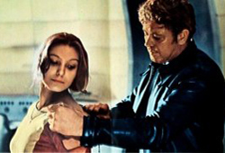
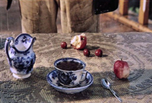
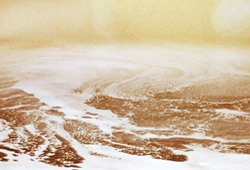
Solaris is a 1972 science fiction art film based on the Polish novelist Stanislaw Lem's work of the same name published in 1961. The film was co-written and directed by Andrei Tarkovsky, and stars Donatas Banionis and Natalya Bondarchuk. The electronic music score was performed by Eduard Artemyev; a composition by J.S. Bach is also used.
The plot centres on a space station orbiting the fictional planet Solaris, where a scientific mission has stalled because the skeleton crew of three scientists have fallen into emotional crises. Psychologist Kris Kelvin (Banionis) travels to the station in order to evaluate the situation, only to encounter the same mysterious phenomena as the others. The film was Tarkovsky's attempt to bring a new emotional depth to science fiction films; he viewed most western works in the genre as shallow due to their focus on technological invention.
Solaris won the Grand Prix Spécial du Jury and the FIPRESCI prize at the 1972 Cannes Film Festival and was nominated for the Palme d'Or. It received generally positive reviews from critics. It is often cited as one of the greatest science fiction films in the history of cinema. Some of the ideas Tarkovsky expresses in this film are further developed in his film Stalker (1979).
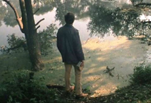
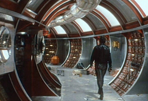
In 1968 Andrei Tarkovsky had several motives for cinematically-adapting Stanislaw Lem's science fiction novel Solaris (1961). First, he admired Lem's work. Second, he needed work and money, because his previous film, Andrei Rublev (1966), had gone unreleased, and his screenplay A White, White Day had been rejected (it was later realised in 1975 as Mirror). A film of a novel by Lem, a popular and critically respected writer in the USSR, was a logical commercial and artistic choice. Another inspiration was Tarkovsky's desire to bring emotional depth to the science-fiction genre, which he regarded as shallow due to its attention to technological invention; in a 1970 interview, he singled out Stanley Kubrick's 1968 film 2001: A Space Odyssey as "phoney on many points" and "a lifeless schema with only pretensions to truth".
Tarkovsky and Lem collaborated and remained in communication about the adaptation. With Fridrikh Gorenshtein, Tarkovsky co-wrote the first screenplay in the summer of 1969; two-thirds of it occurred on Earth. The Mosfilm committee disliked it, and Lem became furious over the drastic alteration of his novel. In the novel Lem describes science's inadequacy in allowing humans to communicate with an alien life form, because certain forms, at least, of sentient extra-terrestrial life may operate well outside of human experience and understanding. In the movie, Tarkovsky concentrates on Kelvin's feelings for his wife, Hari, and the impact of outer space exploration on the human condition. Dr. Gibarian's monologue is the highlight of the final library scene, wherein Snaut says: "We don't need other worlds. We need mirrors".
Unlike the novel, which begins with Kelvin's spaceflight and takes place entirely on Solaris, the film shows Kelvin's visit to his parents' house in the country before leaving Earth. The contrast establishes the worlds in which he lives – a vibrant Earth versus an austere, closed-in space station orbiting Solaris – demonstrating and questioning space exploration's impact on the human psyche.
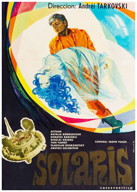
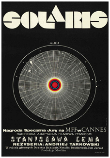
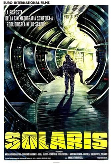
The interior of the space station is decorated with full reproductions of the 1565 painting cycle of The Months (The Hunters in the Snow, The Gloomy Day, The Hay Harvest, The Harvesters and The Return of the Herd), by Pieter Brueghel the Elder, and details of Landscape with the Fall of Icarus and The Hunters in the Snow (1565). The scene of Kelvin kneeling before his father and the father embracing him alludes to The Return of the Prodigal Son (1669) by Rembrandt. The references and allusions are Tarkovsky's efforts to give the young art of cinema historical perspective, to evoke the viewer's feeling that cinema is a mature art.
The film references Tarkovsky's 1966 film Andrei Rublev by having an icon by Andrei Rublev being placed in Kelvin's room. It is the second of a series of three films referencing Rublev, the last being Tarkovsky's next film, Mirror, which was made in 1975 and which references Andrei Rublev by having a poster of the film hung on a wall.
Tarkovsky initially wanted his ex-wife, Irma Raush, to play Hari, but after meeting Swedish actress Bibi Andersson in June 1970, he decided that she was better for the role. Wishing to work with Tarkovsky, Andersson agreed to be paid in rubles. Nevertheless, Natalya Bondarchuk was ultimately cast as Hari. Tarkovsky had met her when they were students at the State Institute of Cinematography. It was she who had introduced the novel Solaris to him. Tarkovsky auditioned her in 1970, but decided she was too young for the part. He instead recommended her to director Larisa Shepitko, who cast her in You and I. Half a year later, Tarkovsky screened that film and was so pleasantly surprised by her performance that he decided to cast Bondarchuk as Hari after all.
Tarkovsky cast Lithuanian actor Donatas Banionis as Kelvin, the Estonian actor Jüri Järvet as Snaut, the Russian actor Anatoly Solonitsyn as Sartorius, the Ukrainian actor Nikolai Grinko as Kelvin's father, and Olga Barnet as Kelvin's mother. The director had already worked with Solonitsyn, who had played Andrei Rublev, and with Grinko, who appeared in Andrei Rublev and Ivan's Childhood (1962). Tarkovsky thought Solonitsyn and Grinko would need extra directorial assistance. After filming was almost completed, Tarkovsky rated actors and performances thus: Bondarchuk, Järvet, Solonitsyn, Banionis, Dvorzhetsky, and Grinko; he also wrote in his diary that "Natalya B. has outshone everybody".
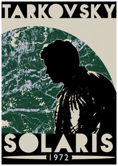
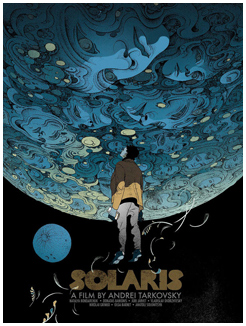
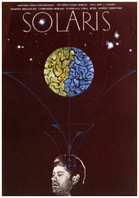
In the summer of 1970 the USSR State Committee for Cinematography (Goskino SSSR) authorized the production of Solaris, with a length of 4,000 metres (13,123 ft), equivalent to a two-hour twenty-minute running time. The exteriors were photographed at Zvenigorod, near Moscow; the interiors were photographed at the Mosfilm studios. The scenes of space pilot Berton driving through a city were photographed in September and October 1971 at Akasaka and Iikura in Tokyo. The original plan was to film futuristic structures at the World Expo '70, but the trip was delayed. The shooting began in March 1971 with cinematographer Vadim Yusov, who also photographed Tarkovsky's previous films. They quarreled so much on this film that they never worked together again.
Eastman Kodak colour film was used in the colour scenes. Not widely available in the Soviet Union, it had to be specially procured for the production. The first version of Solaris was completed in December 1971.
The Solaris ocean was created with acetone, aluminium powder and dyes. Mikhail Romadin designed the space station as lived-in, beat-up and decrepit rather than shiny, neat and futuristic. The designer and director consulted with scientist and aerospace engineer Lupichev, who lent them a 1960s-era mainframe computer for set decoration. For some of the sequences, Romadin designed a mirror room that enabled Yusov to hide within a mirrored sphere so as to be invisible in the finished film. Akira Kurosawa, who was visiting the Mosfilm studios just then, expressed admiration for the space station design.
In January 1972 the Goskino requested editorial changes before releasing Solaris. These included a more realistic film with a clearer image of the future and deletion of allusions to God and Christianity. Tarkovsky successfully resisted such major changes, and after a few minor edits Solaris was approved for release in March 1972.
The soundtrack of Solaris features Johann Sebastian Bach's chorale prelude for organ Ich ruf' zu dir, Herr Jesu Christ, BWV 639, played by Leonid Roizman, and an electronic score by Eduard Artemyev. The prelude is the central musical theme. Tarkovsky initially wanted the film to be devoid of music and asked Artemyev to orchestrate ambient sounds as the score. The latter proposed subtly introducing orchestral music. In counterpoint to classical music as Earth's theme, is fluid electronic music as the theme for the planet Solaris. The character of Hari has her own subtheme, based on Bach's music featuring Artemyev's music atop it; it is heard at Hari's death and at the story's end.
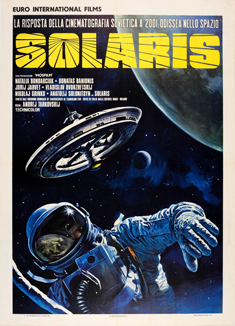
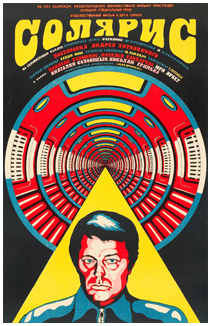
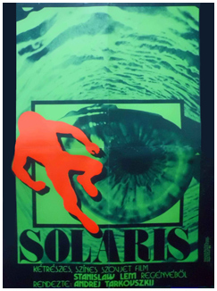